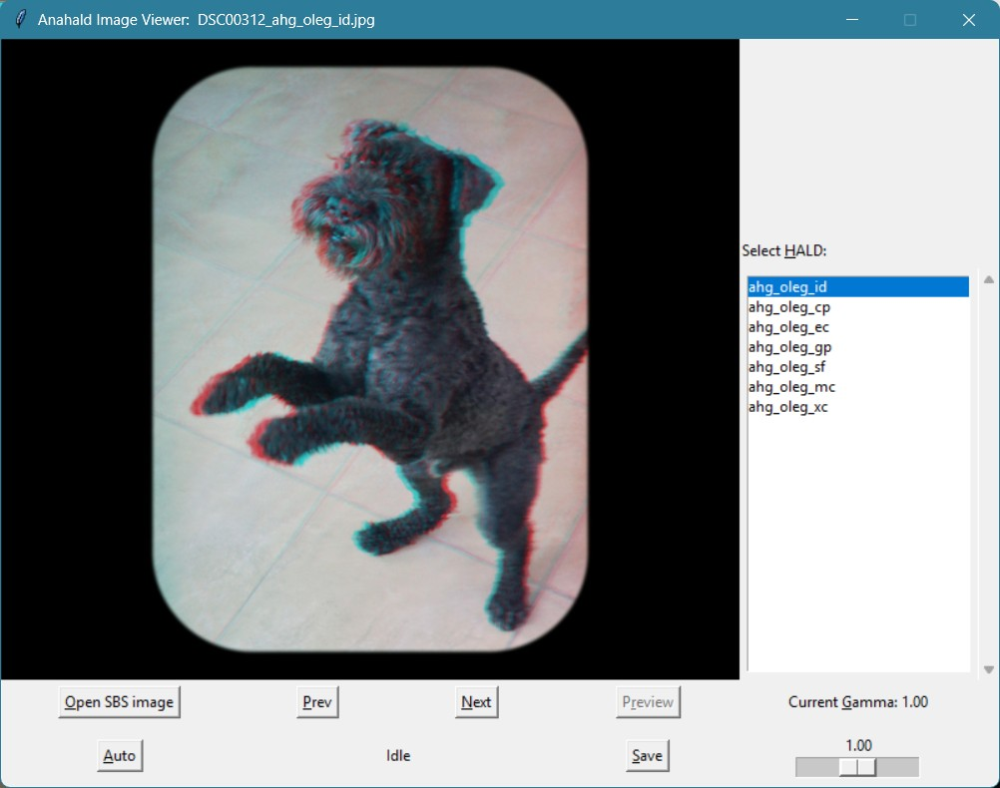

Anaglyph HALD Generator (Anahald) - Image Viewer GUI
By Oleg Kosyakovsky
Table of Contents
Functionality
Anahald GUI allows to preview application of pre-made HALD LUTs to stereopairs and save the resulting anaglyph files. Given to the user are two image controls - choice of HALD LUT and gamma. Here is the screenshot of the viewer:

Saved images are stored in subdirectories under the folders of the corresponding side-by-side input image. E.g. anaglyph made from SBS image C:\Inp\img.tif will go to directory C:\Inp\<Configurable-Subdirectory-Name>\.
Compatibility, pre-requisites and installation
Anahald GUI is tested only on Windows.
Please follow installation instructions in Installing Anahald-Choice. There is nothing more to be done specifically for the GUI viewer.
Configuration options
The following options could be tuned by modifying <Anahald-Root>\Code\Choice\ah_cfg.py file:
- Name of the output directory - through 'OUTDIR_NAME' variable - change the name in double quotes.
- the default name is "ANA"
- the default name is "ANA"
- Output format is JPEG if 'MAKE_TIFF' variable set to False, or TIFF if it's set to True.
- the default choice is JPEG
- the default choice is JPEG
- GUI window dimensions in pixels - through 'WINDOW_WIDTH' and 'WINDOW_HEIGHT' variables.
- minimal size is 800x600, upper limit is available screen area
- if specified dimensions are outside of the above bounds, error is shown and the size defaults to 800x600
- minimal size is 800x600, upper limit is available screen area
You need to restart Anahald GUI for the change to take effect.
Usage
Invocation is performed by starting Python interpreter with path of <Anahald-Root>\Code\View\viewer_app.py as the single argument.
The usual way of accessing Python interpreter on Windows is to start its command shell and run the interpreter from this shell's prompt.
For example the shell of WinPython appears in the author's Start-Menu as "WinPython Command Prompt". It looks like the regular Windows Cmd shell, but has all the environment prepared for the Python interpreter.
On the author's computer, from within this WinPython shell, Anahald Viewer could be started by the following command:
python c:\Oleg\GitWork\AnaHald\Code\View\viewer_app.py
It is also possible to use 'python.bat' configured in Python arrangement for auto-choice as the shortcut for python interpreter. Then you can use the regular Cmd window (not the one associated with Python).
On the same author's computer this would look like:
c:\Oleg\GitWork\AnaHald\Code\Choice\python.bat c:\Oleg\GitWork\AnaHald\Code\View\viewer_app.py
The usage routine involves loading SBS images and choosing for them HALD-LUTs and gamma settings:
- Open first image with <Open SBS image> button, then browse using <Prev> and <Next>.
- Select HALD LUT and gamma, then press <Preview> to render the image on-screen.
- Press <Save> to store full-size image in the output subdirectory (see Configuration options).
- If auto-choice is properly configured, pressing <Auto> button selects recommended HALD LUT and gamma; then press <Preview> to observe the effect.
Adding more HALD LUTs
Anahald GUI is not restricted to Anahald sample LUTs; it will work with any HALD LUT in TIFF format as long as it satisfies the following two conditions:
- resides in one of the two HALD directories - <Anahald-Root>\SAMPLE_HALDS or <Anahald-Root>\SAMPLE_HALDS\ADD\
- its filename agrees with the pattern "hald__<ANY-STRING>__16.TIF"
- examples: "hald__ahg_oleg_cp__16.TIF", "hald__greenish__16.TIF"
- examples: "hald__ahg_oleg_cp__16.TIF", "hald__greenish__16.TIF"
New HALD(s) should be put in the proper directory prior to starting Anahald GUI.